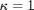
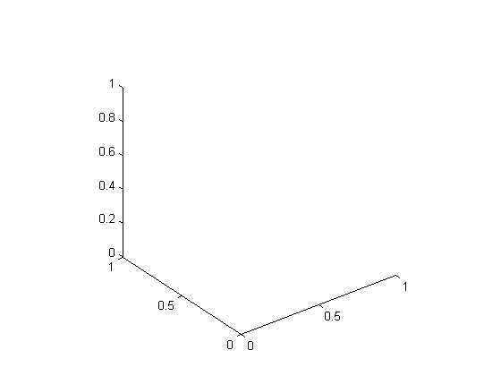
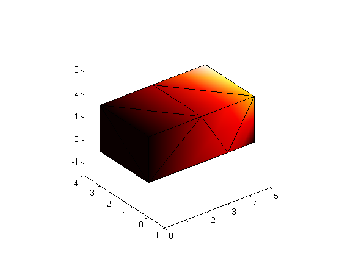

Heated brick. Solution with quadratic tetrahedra.
Contents
Link to the m-file.
Description
The brick represented in Figure 1 has insulated lateral surfaces (BCGF, CDHG, DAEH, ABFE). The surface ABCD is maintained at constant temperature T = 0 degrees, and the temperature is linearly distributed at EFGH surface so that T = 0 degrees at E point, T = 1 degrees at H and T = 2 degrees at point F. Find temperature at the point P. The reference solution for the temperature at point P is 0.901 degrees. Thermal conductivity .
The problem was solved with hexahedra in tutorials pub_heated_brick and pub_heated_brick_quadratic. In this case quadratic tetrahedra will be used.

|
| Figure 1. Definition of the geometry of the heated brick |
Analytical solution is due to the Reference M. Necati Ozisik “Boundary Value Problems of Heat Conduction”. Dover Publications, INC., N.Y. 1989.
Solution
The solution flow is very similar to that of pub_heated_brick. The only difference is due to the use of quadratic tetrahedra. The changes in the code will be clearly marked with [[TETRAHEDRA]].
function pub_heated_brick_tet
Definition of the geometry: The locations of the points.
A=[0,0,0]; B=[0,0,2]; C=[0,3,2]; D=[0,3,0];
E=[5,0,0]; F=[5,0,2]; G=[5,3,2]; H=[5,3,0];
P=[3.75,0,0];
Define the material properties.
kappa= 1.0;
Generate the mesh by meshing two general hexahedra and merging them into a single mesh.
[fens,fes] = H8_hexahedron([A;P;(D+H)/2;D;B;(B+F)/2;(C+G)/2;C],1,1,1,[]);
[fens1,fes1] = H8_hexahedron([P;E;H;(D+H)/2;(B+F)/2;F;G;(C+G)/2],1,1,1,[]);
[fens,fes1,fes2] = merge_meshes(fens1, fes1, fens, fes, 1/1000);
fes=cat(fes1,fes2);
[[TETRAHEDRA]] Next, the two-element mesh is converted to tetrahedra. The locations of the nodes are going to be used as vertices in the so-called Delaunay tetrahedralization.
[fens,fes] = T4_hull(fens.xyz);
[[TETRAHEDRA]] If desired, the tetrahedral mesh may now be refined (repeatedly) by octasection. The lines below then may be enabled by removing the comments. [fens,fes] = T4_refine(fens,fes); % [fens,fes] = T4_refine(fens,fes);
[[TETRAHEDRA]] The mesh of tetrahedra T4 is now converted to the quadratic tetrahedra T10 with 10 nodes.
[fens,fes]=T4_to_T10(fens,fes);
We are going to create the objects for the analysis. The thermal property and the thermal material objects:
prop=property_heat_diffusion(struct('thermal_conductivity',kappa,'source',0.0)); mater=material_heat_diffusion (struct('property',prop));
The finite element model machine for heat diffusion. [[TETRAHEDRA]] Tetrahedral quadrature rule with four points is the minimum for the quadratic tetrahedron.
femm = femm_heat_diffusion (struct ('material',mater,... 'fes',fes,... 'integration_rule',tet_rule(struct( 'npts',4))));
This is it for the changes required to transition from hexahedra to tetrahedra. Everything else below is the same as in pub_heated_brick.
The geometry nodal field is created from the finite element node set.
geom = nodal_field(struct('name',['geom'], 'dim', 3, 'fens',fens));
The temperature field has one degree of freedom per node.
temp=nodal_field(struct('name',['temp'], 'dim', 1, 'nfens',geom.nfens));
The essential boundary conditions are applied next.
Essential boundary condition: zero temperature on face ABCD.
fenids=fenode_select(fens,struct('box',[A(1),A(1),-inf,inf,-inf,inf],... 'inflate', 1/1000)) ; temp = set_ebc(temp, fenids, true, [], 0.0); temp = apply_ebc (temp);
Essential boundary condition: linearly-varying temperature on face EFGH.
fenids=fenode_select(fens,struct('box',[E(1),E(1),-inf,inf,-inf,inf],... 'inflate', 1/1000)) ; fixed_temperatures =1.0*fens.xyz(fenids,2)/H(2)+2.0*fens.xyz(fenids,3)/F(3); temp = set_ebc(temp, fenids, true, [], fixed_temperatures); temp = apply_ebc (temp);
Number the free degrees of freedom
temp = numberdofs (temp);
Calculate and assemble the conductivity matrix.
K = conductivity(femm, sysmat_assembler_sparse, geom, temp);
Calculate and assemble the non-zero-EBC heat load.
F = nz_ebc_loads_conductivity(femm, sysvec_assembler, geom, temp);
Compute the values of the temperature for the free degrees of freedom and distribute the results to the nodal field.
temp = scatter_sysvec(temp, K\F);
Graphical rendering of the computed temperatures. First we show the temperature displayed with filled surfaces on the boundary of the mesh color-coded with the temperature.
Create the graphics viewer and reset the view. Note: so that we don't have to see all the intermediate figures in the published output, we create the figure as invisible, and then we turn it on when we call interact().
close all figure('visible', 'off') gv=graphic_viewer; gv=reset (gv,struct('axes',gca));
Create the data colormap object for mapping temperatures to colors.
dcm=data_colormap(struct('range',[min(temp.values),max(temp.values)],'colormap',hot));
Create the color field, with colors at nodes. The colors will be interpolated using the finite element basis functions on the mesh.
colorfield=nodal_field(struct ('name', ['colorfield'], 'data',... map_data(dcm, temp.values)));
Plot the color field on the surface of the brick.
draw(mesh_boundary(femm.fes, []), gv, struct ('x',geom, 'u',0*geom,... 'colorfield',colorfield, 'shrink',1));
Add the color bar
draw_colorbar(gv, struct('colormap',dcm.colormap,'label','Temperature',... 'minmax',[min(temp.values),max(temp.values)]));
Add the labels to the axes...
labels ([])
...and make the figure visible and interact with the view.
interact(gv);
We are going to present the temperatures using isosurfaces. These are surfaces of constant temperature, which are going to be color-coded using a map from temperatures to colors.
Create the graphics viewer and reset the view.
close all figure('visible', 'off') gv=graphic_viewer; gv=reset (gv,struct('axes',gca));
Create the data colormap object for mapping temperatures to colors.
dcm=data_colormap(struct('range',[min(temp.values),max(temp.values)],'colormap',hot));
Plot the boundary surface of the brick in wireframe rendering for reference.
draw(mesh_boundary (femm.fes, []), gv, struct ('x',geom, 'u',0*geom,... 'facecolor','none')); for isovalue = [0.5:0.25:3.0] draw_isosurface(fes, gv, struct ('x',geom, 'u',0*geom,... 'scalarfield',temp,'isovalue',isovalue,'color',map_data(dcm, isovalue))); end
Add the color bar
draw_colorbar(gv, struct('colormap',dcm.colormap,'label','Temperature',... 'minmax',[min(temp.values),max(temp.values)]));
Add the labels to the axes...
labels ([])
Add lighting to aid in the interpretation of the scene.
headlight(gv);
...and make the figure visible and interact with the view.
interact(gv);
Temperature at point P: Find the node at that point using a bounding box,...
Pid=fenode_select(fens,struct('box',bounding_box(P),... 'inflate', 1/1000)) ;
... and retrieve the temperature:
temp.values(Pid)
ans = 8.9976e-01
This may be compared with the analytical solution of 0.901 degrees at point P. With the given mesh we are therefore within a percent of the analytical solution.
Temperature at point P: Find the node at that point using a bounding box,...
Pid=fenode_select(fens,struct('box',bounding_box(P),... 'inflate', 1/1000)) ;
... and retrieve the temperature:
temp.values(Pid)
ans = 8.9976e-01
This may be compared with the analytical solution of 0.901 degrees at point P. With the given mesh we are therefore within a percent of the analytical solution.
Discussion
The quadratic tetrahedron is seen to be quite accurate. If you'd like to see the effect of the approximation order on the tetrahedron on the quality of the solution, switch to linear tetrahedra (T4) by removing (commenting out) the conversion
[fens,fes]=T4_to_T10(fens,fes);
For reasonable accuracy one would then have to refine the mesh, and not only once but twice, to reduce the error below 10%.
end